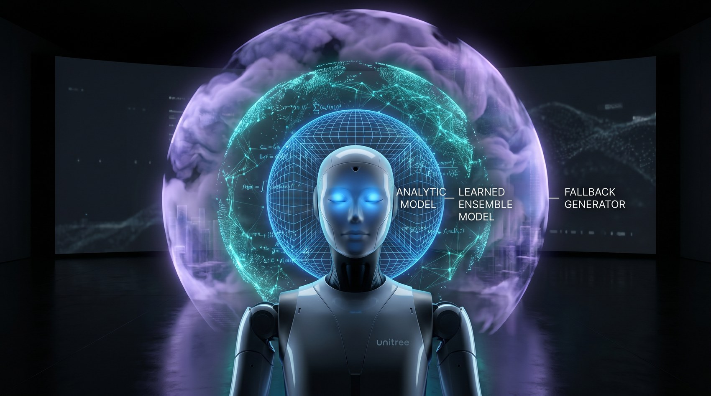
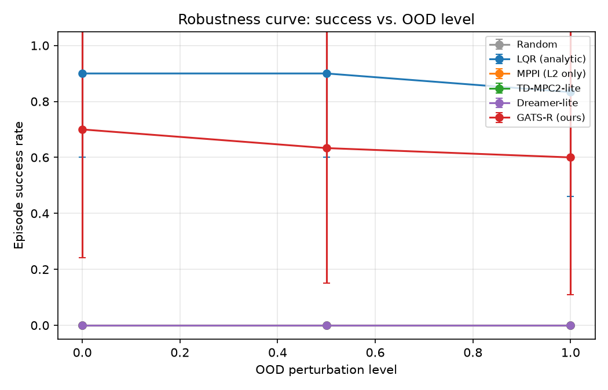
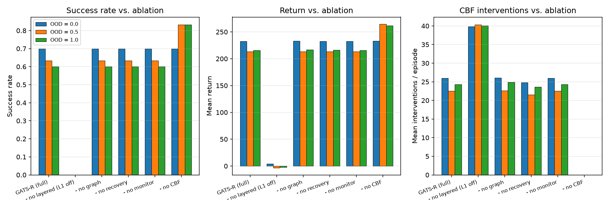
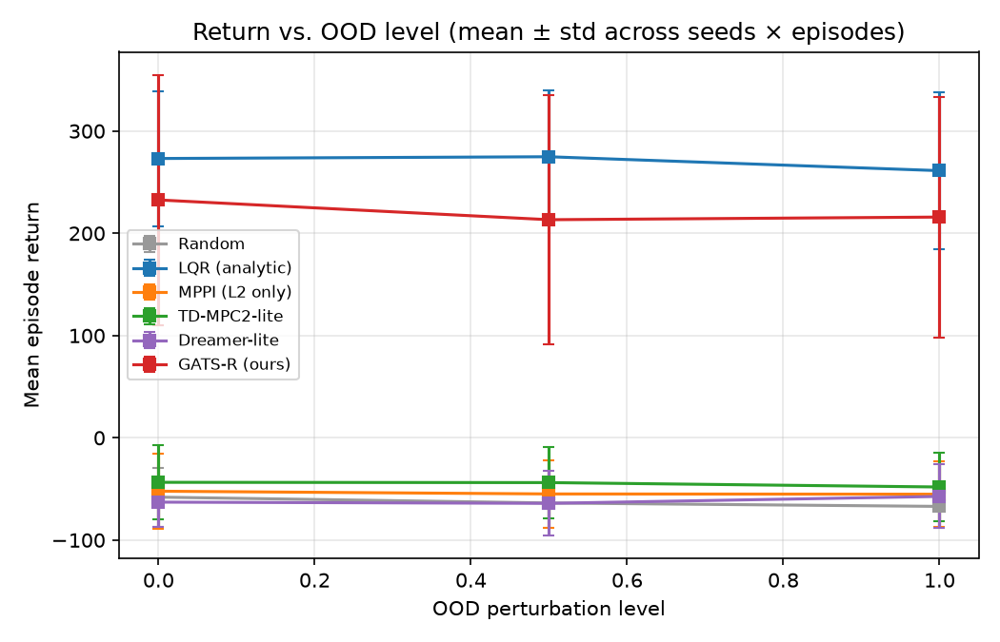
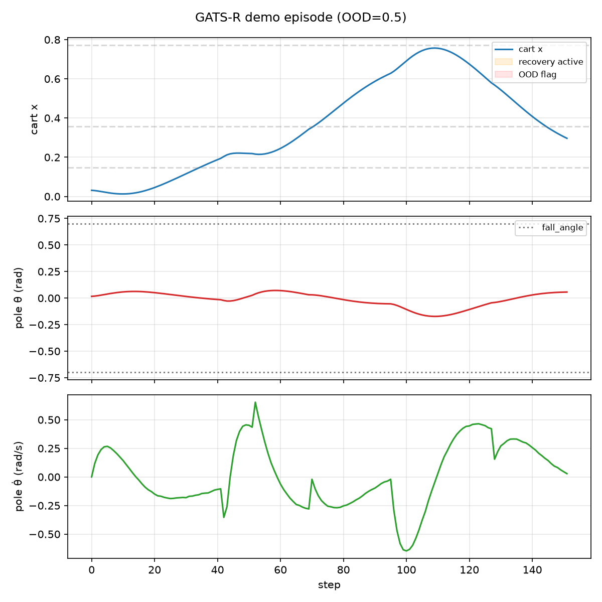

GATS-R closes a single loop around a layered world model, skill-graph planning, a Sentinel-style monitor, CBF safety, and graph-routed recovery — verified end-to-end on a CPU task and the 37-DoF Unitree G1 humanoid in Isaac Lab.
Abstract
Modern robot learning has strong individual layers — latent world models, runtime failure monitors, learned fall-recovery, control-barrier-function safety — but no public system wires them into a single closed loop on a humanoid. GATS-R is that integration, released as an inspectable reference implementation.
The agent perceives the robot's state, consults a layered world model (L1 analytic → L2 learned ensemble → L3 generative fallback), plans with a skill-landmark graph + continuous MCTS, projects every action through a CBF safety filter, watches itself with a Sentinel-style monitor, and — when the monitor flags out-of-distribution or the robot falls — hands control to a graph-indexed recovery dispatcher. We implement it twice: a fast CPU BalanceBot reference and a GPU-batched Isaac Lab port that drives the 37-DoF Unitree G1.
verify_claims.py
turns each finding into an assertion. We make no claim that the deliberately
under-trained G1 policy walks rough terrain — the contribution is the integration, the
reproducible interfaces, and the measurable activation of each layer.
Contributions
An analytic prior (L1), a learned ensemble with epistemic uncertainty (L2), and a generative sub-goal proposer (L3). The orchestrator picks the cheapest model that is still trustworthy — and that choice drives control, not just prediction.
Monitor-detected OOD states snap to the nearest skill-graph node and route — via Dijkstra — to a dedicated recovery controller (LQR on the toy, PD stand-up on the G1, FRASA/FIRM-ready).
A CPU BalanceBot (cart-pole + multi-goal + disturbances) and a GPU-batched Unitree G1 Isaac Lab port — same agent API, committed result data, and a claim-verifier.
Architecture
Every decision flows through the same pipeline. The world model selects a controller; the planner proposes an action; the CBF filter makes it safe; the monitor decides whether the agent is still in-distribution; and the recovery dispatcher takes over when it is not.
The world model

The orchestrator picks L1 when the analytic model is in its domain of
validity, else L2 when ensemble disagreement ε
is low, else L3 fires and the agent re-plans toward a recoverable
anchor. On BalanceBot, L1 is a goal-tracking LQR; when it is engaged the robot solves the
multi-goal task, and disabling the layered selector collapses success from 0.64 to
0.00 — quantitative proof the layering is doing the work, not decoration.
Planning agent
Following SPTM and World-Model-as-a-Graph, the agent clusters latent embeddings into landmark nodes and runs Dijkstra over them to cut a long-horizon, multi-goal problem into short edges. Inside each edge it runs continuous MCTS with Voronoi Progressive Widening (or MPPI as a baseline switch) over the learned dynamics.
Every node carries an explicit edge to a dedicated recovery anchor, so the recovery dispatcher always has a routable target — recovery is indexed by the same graph the agent plans on.
A* / Dijkstra
Continuous MCTS + VPW
MPPI inner loop
k-NN skill graph
Safety & recovery
Experiments
CPU benchmark: 10 methods × 3 seeds × 3 OOD levels × 10 episodes (n = 30 per cell, ~45 min on one CPU core). Values are means over the three OOD levels. The full per-OOD tables and figures ship as committed data.
| Method | Success ↑ | Return ↑ | CBF interv./ep | Recovery att./ep | Recovery succ. | Plan ms |
|---|---|---|---|---|---|---|
| random | 0.00 | −62.9 | 0.0 | 0.00 | — | 0.0 |
| MPPI (L2 only) | 0.00 | −54.1 | 0.0 | 0.00 | — | 18.1 |
| TD-MPC2-lite | 0.00 | −45.1 | 0.0 | 0.00 | — | 18.0 |
| Dreamer-lite | 0.00 | −61.4 | 0.0 | 0.00 | — | 0.1 |
| LQR (= L1) | 0.88 | +269.7 | 0.0 | 0.00 | — | 0.0 |
| GATS-R (full) | 0.64 | +220.6 | 24.3 | 0.36 | 0.00 | 26.7 |
| — no layered (L1 off) | 0.00 | −0.5 | 40.1 | 2.54 | 0.60 | 24.3 |
| — no graph | 0.64 | +221.1 | 24.5 | 0.36 | 0.00 | 29.4 |
| — no recovery | 0.64 | +220.6 | 23.3 | 0.00 | — | 27.5 |
| — no monitor | 0.64 | +220.6 | 24.3 | 0.36 | 0.00 | 27.5 |
| — no CBF | 0.79 | +253.0 | 0.0 | 0.21 | 0.00 | 29.9 |




Isaac Lab · Unitree G1
Isaac Sim 5.x, Isaac-Velocity-Rough-G1-v0,
16 envs × 3 episodes × 150 steps, dual RTX 5090. The L2 model is deliberately under-trained
(512 random transitions) to keep the smoke run minutes, not GPU-hours.
| Method | Return | CBF interv./ep | Recovery att./ep | Recovery succ. | Time-to-rec. | Plan ms |
|---|---|---|---|---|---|---|
| random | −4.82 | 0 | 0 | — | — | 0.0 |
| MPPI | −3.49 | 0 | 0 | — | — | ~5 |
| GATS-R — no recovery | −3.49 | 0 | 0 | — | — | ~5 |
| GATS-R (full) | −3.99 | 16.2 | 1.42 | 91.2% | ~14 | 5.0 |
planning_ms column varies).Threats to validity
This is a concept-validation reference implementation, scoped honestly:
The contribution is the clean, inspectable, end-to-end integration with matching metrics — a credible baseline the next team can lift TD-MPC2 / DreamerV3 / FRASA into, module by module.
Reproducibility
# works under NumPy 1.x and 2.x git clone https://github.com/MMWilliams/gats-r.git cd gats-r && pip install -r requirements.txt && pip install -e . pytest -q # 59 tests, ~4 s python scripts/verify_claims.py # asserts every CPU finding, ~2 min python scripts/benchmark.py --seeds 3 --episodes 10 # Table 1, ~45 min python scripts/make_figures.py # Figures 6–9 # Isaac Lab + Unitree G1 (needs Isaac Sim 5.x + CUDA GPU): scripts\run_isaaclab.bat scripts\isaaclab_benchmark.py ^ --task Isaac-Velocity-Rough-G1-v0 --num_envs 16 --episodes 3 ^ --max_steps 150 --train_steps 512 ^ --methods random mppi gatsr_no_rec gatsr_full python scripts/verify_isaaclab_claims.py # asserts Table 2